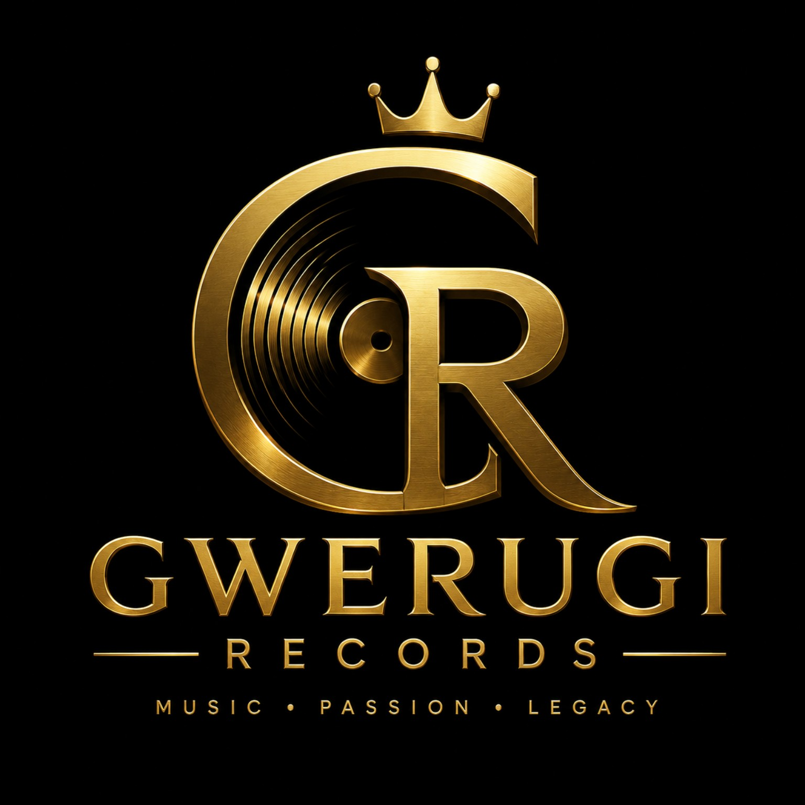

Founded in 2026 by Njabulo Koshu and Jovi D, Gwerugi Records is an independent South African record label focused on artist development, professional music production and worldwide distribution.
Develop talented artists and release world-class music.
Become one of South Africa's leading independent record labels.
Production
Recording
Mixing
Management
Distribution
Bookings
065 129 7782
065 291 5814
gwerugirecords@gmail.com